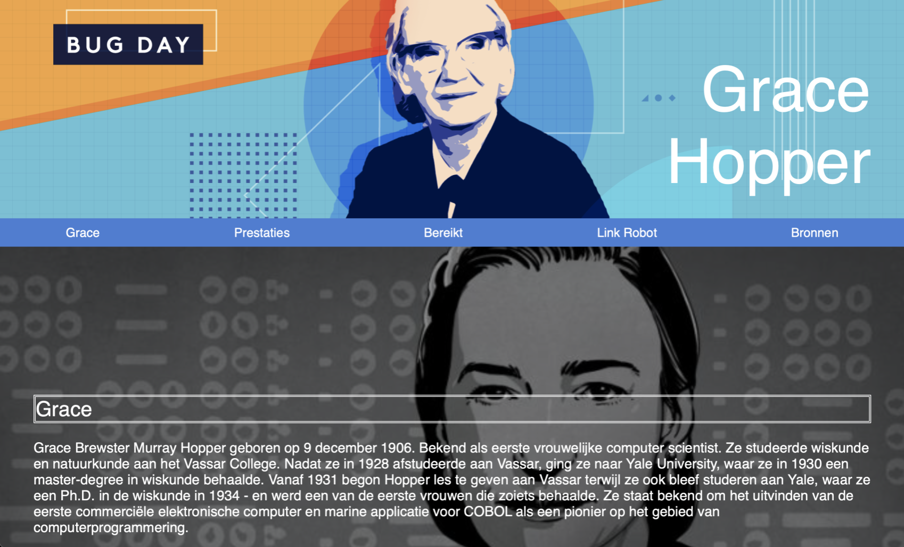
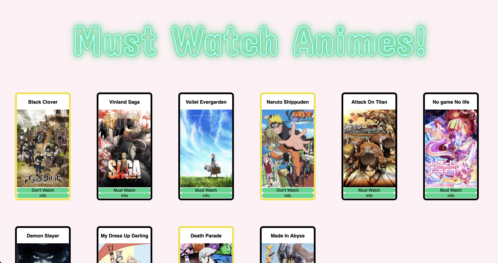

Wie ben ik
Hey! Ik ben Jasmine een eerste jaars student in Creatief Media en Game Technologie op het Hogeschool Rotterdam.
Mijn specialisaties zijn front end en creatief denken van concepten. Ik hou ervan om creatief bezig te zijn, tekenen en
game zijn een grote passie van mij. Met deze 2 intresses helpt het mij veel om geinspeerd te raken dat helpt bij mijn
studies. Als u meer intresse heeft kunt u verder kijken door mijn portfolio.
Projecten

Cheese valley was een groepsproject waarbij we de kans hadden om een eigen game te creeëren
Dit was een one pager met informatie over Grace Hopper voor techniek filosofie
Voor programmeren kregen we de opdracht om een magazine te maken met onderwerp naar keuze. Natuurlijk heb ik gekozen voor mijn favoritie pasie, anime kijken.

Als eerste opdracht had ik de kans om voor Snackbar 't Centrum een werkende reserveringssysteem te creeëren.
Contact
Als u meer vragen heeft kunt u mij bereiken op mijn mail: 1037569@hr.nl